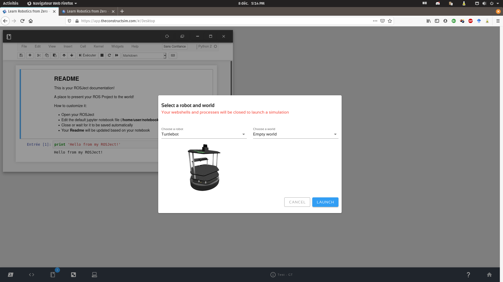

Simulate a turtlebot2
The first step in the challenge is to get control over a turtlebot2 robot equipped with a standard plan laser.
Robot configuration
Turtlebot is a simple robot very similar than small home-cleaning robot, but with a connection panel allowing hacking its sensors and actuators.
More detail on the official web site.
Basically, the turtlebot is equipped with sonars and a 3D camera. The robot version to use is also equipped with a scanning rangefinder like the one proposed by hokuyo. Those solutions are also well supported in ROS.
On TheConstruct RDS
TheConstruct RDS provides built in the gazebo simulation with turtlebot2 robots (on Melodic). You can start the simulation from your fresh gited ROSject (Melodic - No template) through the simulation button.

Then select the turtlebot robot in an empty world.

Finally, you will be capable of spawning some obstacles to avoid.

Avoid obstacles
The solution development for the challenge can begin. The first mission would be to permit the robot to move from its start position toward a goal position by avoiding the obstacles. A quick look at the available ROS topics permit to identifiate entrances for control and scan.
rostopic list
The goal position (in odom frame) is transmeted to the robot by using Rviz.